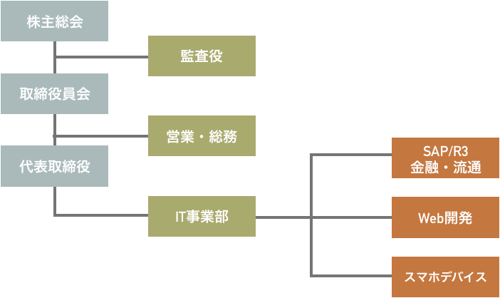
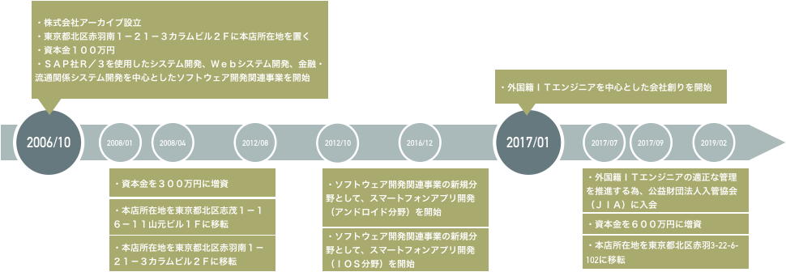
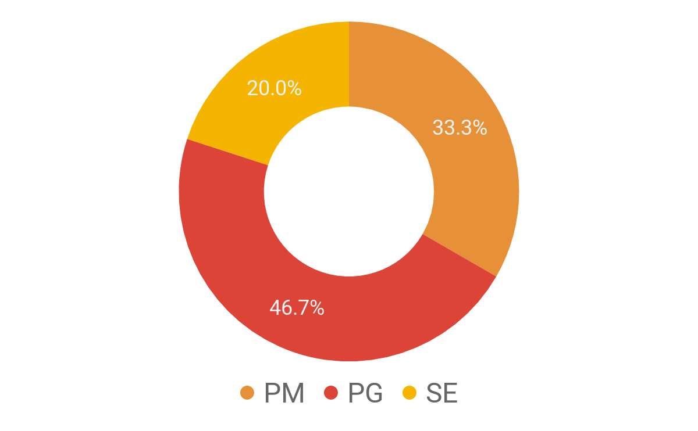
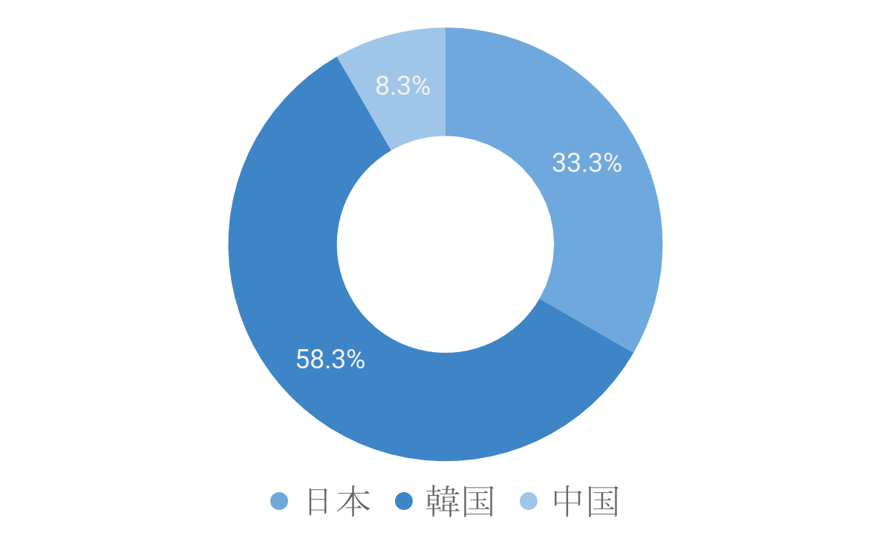

<!DOCTYPE html>
<html lang="en">
<head>
    <meta charset="UTF-8">
    <meta name="viewport" content="width=device-width,initial-scale=1.0">
    <meta http-equiv="X-UA-Compatible" content="ie=edge">
    <link rel="stylesheet" href="css/style.css">
    <title>Archive-Asia</title>
</head>
<header>
        <div class = "language">
                <a href = index.html>日本語</a>
                <a href = index.kr.html>한국어</a>  <a href = index.en.html>English</a>
            </div><h1>Archive Corporation</h1>
            <h1 class="title">“We are an evolving group of engineers”</h1>
<p>115-0045</p>
<p>Akabane Kita-ku, Tokyo 3-22-6-102</p>
<p>tel:03-5939-4070</p>
<p>info@archive-asia.co.jp</p>
</header>


<body class = "home">
    <h2>Company Profile</h2>
    In an era of rapid change, we aim to evolve daily as an IT engineer group with high technology and global sense, and to become a company that can grow with you through IT technology.
    
    <ul>
    <div id ="content">
        <table width="80%">
                <colgroup>
                    <col width="30%"/>
                    <col width="50%"/>
            </colgroup>
       <tr> 
        <th>Establishment</th> <td>2006 / 10 / 10</td>
        </tr>
            <tr>
               <th>Capital</th> <td>6,000,000¥</td>
            </tr>
            <tr>
                <th>Officer</th>
                <td>
                    <li>CEO 角田 元輝</li>
                    <li>Director 鈴木 隆志</li>
                    <li>Director 李 埈昊</li>
                    <li>Director 李 在殷</li>
                    <li>Director 高 成洙</li>
                    <li>Auditor 柴崎 秀明（Tax accountant)</li>
                </td>
            </tr>
             <tr>
                 <th>Business content</th><td>Software development centered on foreign national IT engineers</td>
            </tr>
              <tr>
                  <th>Related business</th><td>and foreign national IT engineer support business</td>
                </tr>
    </table>
    </div>
    </ul>
    
    <h2> Organization chart </h2>
    <ul class = "picture">
            <li></li>
            </ul>

    <h2> History </h2>
    <ul class = "picture">
            <li></li>
            </ul>

    <h2>Business introduction</h2>
    <ol id ="work_info">
        <li>System development</li>
        
        Mobile device application development We are developing Native applications for iOS and Android devices.
            
        <li>WEB System development</li>

        From front-end to back-end, from requirements definition to basic design and construction to system development and maintenance operations, we are developing Web systems, especially using open source frameworks.
            
        <li>AI・IOT</li>

        We are developing systems that realize accumulation of big data, etc. by PC and mobile. We are also developing services that utilize machine learning and deep learning.

        <li>ERP solution</li>

        We are designing and developing system development using ERP package.
            
        <li>COBOL development</li>

        We are developing core systems for financial institutions and government agencies and business application development using COBOL.

        <li>Recruitment / Utilization consultation for foreign national IT engineers</li>
        
        We have been actively recruiting foreign national IT engineers since 2015. Based on the know-how on recruiting and utilizing foreign national IT engineers that we have cultivated so far, we consult with customers who are thinking of actively hiring and utilizing foreign national IT engineers.
    </ol>

    <h2>Our engineer's image / technical field etc</h2>
    We call it an Archive style, and we are focusing on developing engineers who can think and act as follows.
    <ul>
        <div class = "point_li">
        <h3>Archive style</h3>
            <li>Positive Thinking</li>
            <li>Act spontaneously</li>
            <li>Active learning (technical learning) motivation</li>
            <li>Active communication</li>
            <li>Cooperation to grow with friends</li>
            <li>Overwhelming skills that can achieve work content</li>
        </ul>
    </div>

        <h3>Technical field / nationality of engineers currently belonging to our company</h3>
        <div class = "graph">
                
                
        </div>
        <h3>Owned skills (language)</h3>
        <div id ="skil_li">
        <ul>
            <li><strong>Phone</strong> : iOS, Objective-C/Swift, Android, Kotlin/Java</li>
            <li><strong>Web Application</strong> : Java, PHP, Ruby on Rails</li>
            <li><strong>AI</strong> : Ruby, Python</li>
            <li><strong>ETC</strong> : SAP/R3, COBOL</li>
            <li>We hope you are interested in our company. Please feel free to contact me.</li>
        </ul>
        </div>
</main>
</body>
<footer>
<ul>
    <li><a>Archive Corporation</a></li>
    <li>115-0045 Akabane Kita-ku, Tokyo 3-22-6-102</li>
    <li>tel:03-5939-4070</li>
    <li>info@archive-asia.co.jp</li>
</ul>
</footer>
</html>